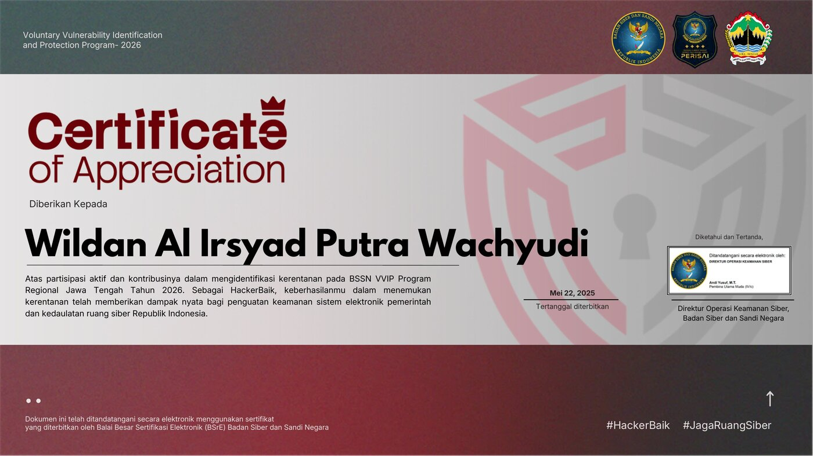
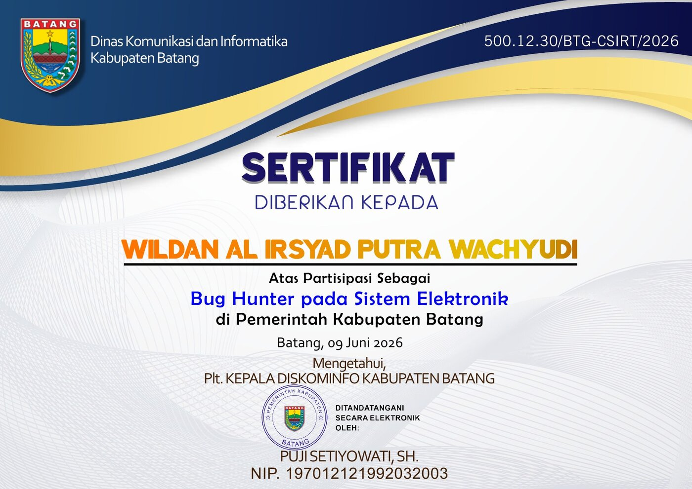

Independent security researcher and systems developer based in Indonesia, operating under the SentinelX name.
Tools and technologies
From private servers to public-sector security
Self-taught from the start — Wildan began by building and running a Growtopia private server, learning backend systems and server administration well before security research became the focus.
That foundation grew into SentinelX: responsible disclosure work with Indonesian government cybersecurity programs, infrastructure management, and a line of independently built security tooling and products.
SentinelX now operates as an independent practice — research, development, and product, under one name.
Working with Indonesia's cybersecurity agencies
Authorized security assessments across regional government infrastructure, resulting in multiple critical and high-severity findings disclosed through official channels. Recognized in person by BSSN for the Batang engagement.
Identified and reported critical-severity vulnerabilities affecting national education data infrastructure through the official disclosure process.
Verified & signed certificates

Official recognition certificate for security research contributions to regional government infrastructure in Central Java.

Certificate of participation in the national education ministry's official bug bounty program with critical findings.
Tools and technologies
Butuh website portofolio, company profile, landing page, atau e-commerce? Saya bikin dengan design modern, responsive, dan SEO-friendly.
Open for collaboration and security research opportunities